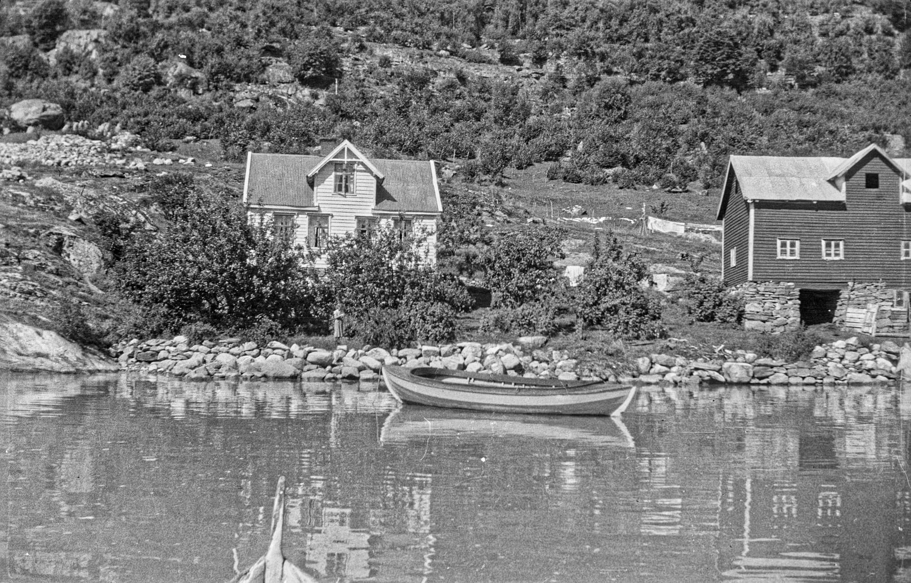

Laberg
My great-grandpa took his house in 1922 and moved from Bakken in Jostedalen to Ytre Eikjo, where he got from his father-in-law the "gårdsbruket" Laberg ². A "gårdsbruk" is a type of farm that belongs under a main farm "gård".

The farm Laberg.
Family photo/Public domain.